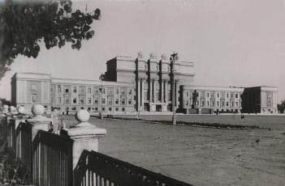

Самарский театр оперы и балета

История Самарского академического театра оперы и балета
Краткий исторический обзор
Самарский академический театр оперы и балета – один из крупнейших российских музыкальных театров. Открытие театра состоялось 1 июня 1931 года оперой Мусоргского «Борис Годунов». У истоков его стояли выдающиеся российские музыканты – ученик Танеева и Римского-Корсакова, дирижер и композитор Антон Эйхенвальд, известный российский дирижер Исидор Зак, режиссер Большого театра Иосиф Лапицкий.
Вписали свои имена в историю театра такие мастера, как дирижеры Савелий Бергольц, Лев Оссовский, режиссер Борис Рябикин, певцы Александр Дольский, народный артист УССР Николай Полудённый, народный артист России Виктор Черноморцев, народная артистка РСФСР, будущая солистка Большого театра Наталья Шпиллер, Лариса Борейко и многие другие.
Балетную труппу возглавила солистка Мариинского театра, участница легендарных дягилевских сезонов в Париже Евгения Лопухова. Она открыла череду блестящих петербургских хореографов, в разные годы стоявших во главе нашего балета. Балетмейстерами Самарского театра были талантливый хореограф, ученица Агриппины Вагановой Наталья Данилова, легендарная петербургская балерина Алла Шелест, солист Мариинского театра Игорь Чернышёв, народный артист СССР Никита Долгушин.
Театр быстро набирает репертуар. В постановках 30-х годов – оперная и балетная классика: оперы Чайковского, Глинки, Римского-Корсакова, Бородина, Даргомыжского, Россини, Верди, Пуччини, балеты Чайковского, Минкуса, Адана.
Большое внимание, соответственно требованиям времени, театр уделяет и современному репертуару. В довоенный период впервые в стране были поставлены оперы «Степь» А. Эйхенвальда, «Таня» Г. Крейтнера, «Укрощение строптивой» В. Шебалина и др. Смелый творческий эксперимент, обращение к неизвестным или незаслуженно забытым шедеврам, присущ театру и в послевоенные годы. В его афишах – десятки названий, от классики XVIII в. («Медея» Керубини, «Тайный брак» Чимарозы) и мало исполняемых произведений русских композиторов XIX в. («Сервилия» Римского-Корсакова, «Чародейка» Чайковского, «Елка» Ребикова) до европейского авангарда ХХ в. («Карлик» фон Цемлинского, «Свадебка» Стравинского, «Арлекино» Бузони).
Особая страница в жизни театра – сотворчество с современными отечественными авторами. Нашей сцене доверяли свои произведения выдающиеся российские композиторы Сергей Слонимский и Андрей Эшпай, Тихон Хренников и Андрей Петров. Значительнейшим событием, далеко выходящим за пределы самарской культурной жизни, стала мировая премьера оперы Слонимского «Видения Иоанна Грозного», осуществленная великим музыкантом ХХ века Мстиславом Ростроповичем в содружестве с выдающимися мастерами сцены режиссером Робертом Стуруа и художником Георгием Алекси-Месхишвили.
Присвоение почетного звания «академический» Куйбышевскому театру оперы и балета
В феврале 2012 года Самарский академический театр оперы и балета отмечает торжественную дату. 30 лет назад, 18 февраля 1982 года, после триумфальных гастролей в Москве, театру было присвоено почетное звание «академический». В столицу возили 11 спектаклей. Перечень названий способен вызвать восхищение у современного зрителя: «Макбет» Дж. Верди, «Мария Стюарт» С. Слонимского, «Порги и Бесс» Дж. Гершвина, «Ивайло» М. Големинова, «Гусарская баллада» и «Любовью за любовь» Т. Хренникова, «Помните!» и «Ангара» А. Эшпая, «Ромео и Юлия» Г. Берлиоза, «Щелкунчик» П. Чайковского, «Царская невеста» Н. Римского-Корсакова. Два из этих спектаклей - «Мария Стюарт» и «Гусарская баллада» - по результатом гастролей были отмечены премией.
Здание театра
На центральной площади города возвышается массивное серое здание – по отзывам искусствоведов, «грандиозный памятник позднего «пилонадного стиля», к которому добавлена брутальная классика», «яркий пример архитектуры 30-х годов». Авторы проекта - ленинградские архитекторы Н.А. Троцкий и Н.Д. Каценеленбоген, в 1935 году выигравшие конкурс на создание Дворца культуры. Театр размещался в центральной части здания. В левом крыле некоторое время находилась областная библиотека, в правом крыле - спортивная школа и художественный музей. В 2006 году началась реконструкция здания театра, потребовавшая выселения спортшколы и музея. К 2010 году, юбилейному сезону театра, реконструкция завершилась.